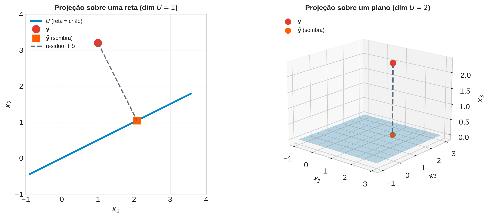
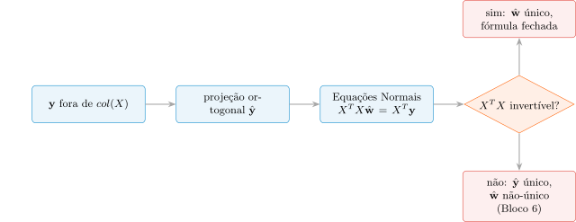
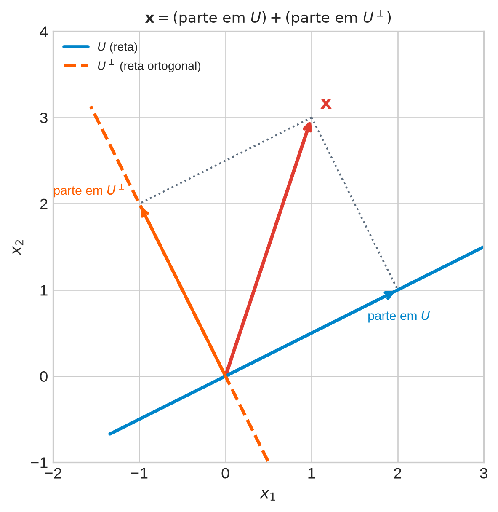
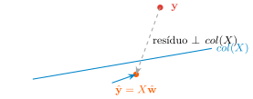
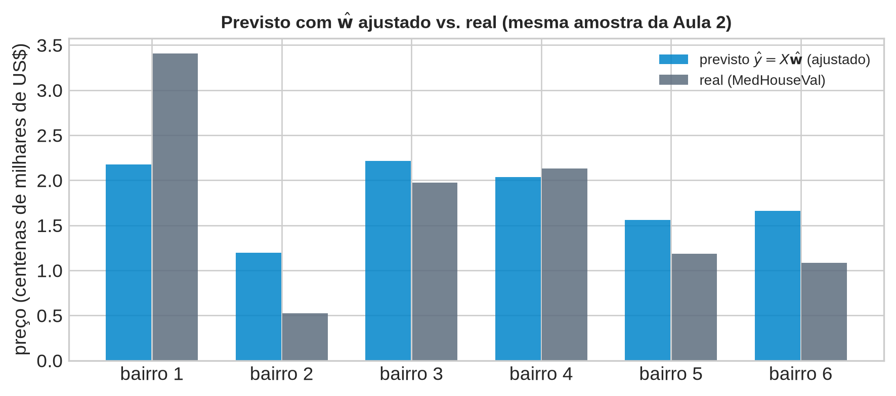
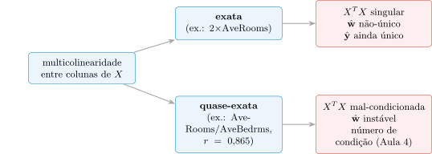

Álgebra Linear e Otimização para Aprendizado de Máquina
2026-08-30
Aula 2: matriz de design \(X\in\mathbb{R}^{N\times d}\), duas leituras de \(A\mathbf{x}\) (linha = previsão, coluna = combinação linear), sistemas lineares com 0, 1 ou \(\infty\) soluções via o posto.
Peça central: \(X\mathbf{w}=\mathbf{y}\) tem \(N\) equações, \(d\) incógnitas. Em ML real, \(N\gg d\) — sobredeterminado, genericamente sem solução exata.
“Sem solução exata” não é “sem solução que preste”. O próprio MathML aponta a saída: “a ideia é encontrar o vetor no subespaço gerado pelas colunas de \(A\) que está mais próximo de \(\mathbf{b}\)” (tradução nossa, §3.8.2).
“Mais próximo, mas dentro de onde?” — geométrico antes de algébrico. É o fio desta aula.
1. O que significa “a melhor aproximação possível” de \(\mathbf{y}\)?
2. O que é projetar sobre um subespaço, e por que resolve o problema 1?
3. Como isso vira uma fórmula calculável — as Equações Normais?
4. Quando essa fórmula falha, ou fica frágil, e por quê?
California Housing: \(N=16\,640\) bairros, 4 atributos. Sistema \(X\mathbf{w}=\mathbf{y}\): \(16\,640\) equações, \(4\) incógnitas — sobredeterminado por uma margem enorme.
Se \(X\mathbf{w}\) nunca alcança \(\mathbf{y}\) exatamente, qual \(X\mathbf{w}\) alcançável está mais perto? “Mais perto” — medido como?

Se \(X\mathbf{w}=\mathbf{y}\) nunca é alcançado exatamente, existe sempre exatamente uma “melhor” aproximação, ou pode haver várias igualmente boas?
Dica: a Aula 2 já classificou o número de soluções exatas de um sistema — 0, 1 ou \(\infty\). Trocar “exata” por “aproximada” muda essa contagem?
Se \(X\mathbf{w}=\mathbf{y}\) nunca é alcançado exatamente, existe sempre uma “melhor” aproximação? — Resposta
Voltando à pergunta: no regime sobredeterminado desta aula (posto completo), existe exatamente uma melhor aproximação — é isso que o Bloco 4 vai provar, via projeção ortogonal.
Um ponto \(\mathbf{y}\) flutuando no espaço; um subespaço \(U\) (reta ou plano pela origem) como “o chão”. Luz perpendicular ao chão \(\Rightarrow\) sombra \(\hat{\mathbf{y}}\).
Propriedade 1: \(\hat{\mathbf{y}}\) é o ponto de \(U\) mais próximo de \(\mathbf{y}\) — nenhum outro ponto do chão está mais perto.
Propriedade 2: o segmento \(\mathbf{y}\to\hat{\mathbf{y}}\) é perpendicular a todo \(U\), não só à direção da luz.
A Propriedade 2 é a razão pela qual a Propriedade 1 é verdade — Bloco 4 prova isso formalmente. Por ora: reta ou plano, mesma operação, “chão” com mais dimensões.

Esquerda: \(U\) = reta na direção \((2,1)\); \(\mathbf{y}=(1{,}0,3{,}2)\) fora dela. Sombra \(\hat{\mathbf{y}}\) = ponto da reta mais próximo; o tracejado encontra a reta em ângulo reto.
Direita: “chão” = plano \(x_3=0\) em \(\mathbb{R}^3\). Projeção só “zera” a componente perpendicular: \((1{,}5,1{,}8,2{,}3)\to(1{,}5,1{,}8,0)\).
Em ambos, o tracejado é perpendicular a todo o subespaço — essa observação generaliza para \(\text{col}(X)\), com \(d=4\) dimensões, não \(1\) ou \(2\). A álgebra muda; a geometria, não.
Se a “luz” da projeção não viesse perpendicular ao chão, o ponto resultante ainda seria o mais próximo de \(\mathbf{y}\)?
Dica: incline a direção da haste que liga \(\mathbf{y}\) à sua sombra — o ponto de chegada continuaria sendo o mais próximo?
A “luz” da projeção — Resposta
Voltando à pergunta: só a perpendicular funciona — é exatamente a Propriedade 2 que o Bloco 4 vai provar ser equivalente à Propriedade 1 (mais próximo \(\iff\) perpendicular), não só uma coincidência do desenho.
Aula 1: subespaço = fechado sob soma/escalar. Aula 2: espaço-coluna \(\text{col}(X)\) = tudo que \(X\mathbf{w}\) alcança.
\(X\in\mathbb{R}^{16640\times 4}\), posto completo: \(\text{col}(X)\) tem dimensão \(4\) dentro de um ambiente de dimensão \(16\,640\) — um “plano” finíssimo boiando num espaço gigantesco. \(\mathbf{y}\) quase certamente fora dele.
Definição (MathML, §3.6, tradução nossa): dado \(U\subseteq V\) com \(\dim U = M\), \(\dim V = D\), seu complemento ortogonal \(U^\perp\) é um subespaço de dimensão \((D-M)\): todos os vetores de \(V\) ortogonais a todo vetor de \(U\).
\(U\cap U^\perp=\{\mathbf{0}\}\); todo \(\mathbf{x}\in V\) se decompõe de forma única: \[\mathbf{x} = \underbrace{\sum_m \lambda_m\mathbf{b}_m}_{\in\, U} + \underbrace{\sum_j \psi_j\mathbf{b}_j^\perp}_{\in\, U^\perp}\]
Notação compacta: \(V = U\oplus U^\perp\) — uma única parte em \(U\), uma única parte em \(U^\perp\), nada sobra de fora.

\(D=2\), \(U\) = reta (\(M=1\)) \(\Rightarrow\) \(U^\perp\) = reta perpendicular (\(D-M=1\)). \(\mathbf{x}=(1,3)\) decompõe-se de forma única: soma das duas setas recupera \(\mathbf{x}\), sem sobra, sem ambiguidade.
Em \(\mathbb{R}^3\) com \(U\) = plano (\(M=2\)): \(U^\perp\) tem dimensão \(1\) — o vetor normal do MathML, “\(\mathbf{w}\) com \(\|\mathbf{w}\|=1\), ortogonal ao plano \(U\)” (tradução nossa, §3.6).
Na regressão: \(D=16\,640\), \(M=4\). \(U^\perp=\text{col}(X)^\perp\) tem dimensão \(16\,636\) — irrelevante em si; o que importa é que o resíduo \(\mathbf{y}-\hat{\mathbf{y}}\) vive exatamente ali.
Se \(U\) fosse o subespaço trivial \(\{\mathbf{0}\}\), o que seria \(U^\perp\)?
Dica: \(U^\perp\) contém todo vetor ortogonal a todo vetor de \(U\). Com \(U=\{\mathbf{0}\}\), quantos vetores de \(V\) cumprem isso?
Subespaço trivial e seu complemento — Resposta
Voltando à pergunta: o complemento ortogonal de \(\{\mathbf{0}\}\) é o espaço todo — caso extremo que confirma a definição, não uma exceção a ela.
Nota
Premissas. 1. Subespaço \(U=\text{col}(X)\subseteq\mathbb{R}^N\) (Aula 2). 2. \(\mathbf{y}\in\mathbb{R}^N\), em geral fora de \(U\) (sobredeterminado). 3. \(\hat{\mathbf{y}}\in U\) = ponto de \(U\) mais próximo de \(\mathbf{y}\) (minimiza \(\|\mathbf{y}-\hat{\mathbf{y}}\|\)) — a “sombra” formalizada.
Objetivo: dessas premissas até uma fórmula fechada e calculável para \(\hat{\mathbf{w}}\), com \(\hat{\mathbf{y}}=X\hat{\mathbf{w}}\).
MathML (tradução nossa, §3.8.1): “a projeção é a mais próxima […] disso segue que o segmento […] é ortogonal a \(U\).” Minimizar distância e ser ortogonal a \(U\) são a mesma condição.
Por quê: se o resíduo tivesse componente dentro de \(U\), dava para mover \(\hat{\mathbf{y}}\) nessa direção e diminuir ainda mais a distância — contradiz mínimo. Logo, no mínimo, resíduo inteiro em \(U^\perp\): \[\mathbf{y}-\hat{\mathbf{y}} \perp U \iff \mathbf{y}-\hat{\mathbf{y}}\in U^\perp\]
\(\hat{\mathbf{y}}\in\text{col}(X)\): pela Leitura 2 (Aula 2), é \(X\mathbf{w}\) para algum \(\mathbf{w}\). Chame esse vetor \(\hat{\mathbf{w}}\): \[\hat{\mathbf{y}} = X\hat{\mathbf{w}}\]
Substituindo no Passo (i): \[\mathbf{y}-X\hat{\mathbf{w}} \perp \text{col}(X)\]
“Ortogonal a \(\text{col}(X)\) inteiro” parece gigantesco, mas o MathML mostra que basta checar coluna a coluna (tradução nossa, §3.8.2): \(m\) condições simultâneas \(\Rightarrow\) sistema \(B^T(\mathbf{x}-B\lambda)=\mathbf{0}\).
Por quê basta as colunas: toda combinação linear delas herda a ortogonalidade — a ortogonalidade “passa” pela combinação sem se perder.
Aplicando ao nosso caso: \[X^T(\mathbf{y}-X\hat{\mathbf{w}}) = \mathbf{0}\]
Distribuindo o Passo (iii): \[X^T\mathbf{y} - X^TX\hat{\mathbf{w}} = \mathbf{0} \iff X^TX\hat{\mathbf{w}} = X^T\mathbf{y}\]
Equações Normais (MathML, eq. 3.56, tradução nossa) — um sistema linear em \(\hat{\mathbf{w}}\): \(X^TX\) no papel de “\(A\)”, \(X^T\mathbf{y}\) no papel de “\(\mathbf{b}\)” — mesma estrutura \(A\mathbf{x}=\mathbf{b}\) da Aula 2.
MathML (tradução nossa, §3.8.2): colunas de \(X\) linearmente independentes \(\Rightarrow\) \(X^TX\) “regular, pode ser invertida” — exatamente o posto completo (\(\text{rk}(X)=d\)) da Aula 2, Bloco 5.
Sob posto completo: \[\hat{\mathbf{w}} = (X^TX)^{-1}X^T\mathbf{y}\] \((X^TX)^{-1}X^T\) = pseudo-inversa de \(X\) (MathML) — nome que volta quando o curso tratar de SVD.
Fecha o ciclo da Aula 2: sobredeterminado sem solução exata, mas com uma única melhor aproximação sob posto completo — com fórmula fechada.

\(\text{col}(X)\) (simplificado como reta — na verdade dimensão \(4\)), \(\mathbf{y}\) fora dele, \(\hat{\mathbf{y}}=X\hat{\mathbf{w}}\) mais próximo, resíduo em ângulo reto — a mesma sombra do Bloco 2, agora com nomes de regressão.
A condição \((\mathbf{y}-X\hat{\mathbf{w}})\perp\text{col}(X)\) garante resíduo zero?
Dica: “mais próximo” e “ortogonal” são a mesma condição (Passo i) — isso é o mesmo que “erro desaparece”?
A condição de ortogonalidade garante resíduo zero? — Resposta
Voltando à pergunta: não — ortogonal ao subespaço é bem mais fraco que “igual a zero”; é só a direção do erro que fica fixada (\(U^\perp\)), não o seu tamanho.
Aplicando a fórmula fechada ao problema motivador: \(N=16\,640\) bairros, \(X\in\mathbb{R}^{16640\times 4}\), \(\mathbf{y}=\) MedHouseVal. Posto completo (Aula 2) \(\Rightarrow\) \(X^TX\) invertível.
X_completo = _housing[COLS].to_numpy()
y_completo = _housing["MedHouseVal"].to_numpy()
# Equações Normais, resolvidas diretamente pela fórmula fechada
XtX = X_completo.T @ X_completo
Xty = X_completo.T @ y_completo
w_hat = np.linalg.inv(XtX) @ Xty
print("w_hat (Equações Normais):", np.round(w_hat, 5))w_hat (Equações Normais): [ 0.48761 0.01171 -0.18809 0.78255]MedInc: peso \(\approx 0{,}488\) — maior em módulo, plausível (renda tem relação direta com preço).
AveRooms: peso negativo (\(\approx -0{,}188\)), contraintuitivo à primeira vista — mas é estimado na presença de AveBedrms (correlacionados, Bloco 6); o modelo pode estar “compensando” superposição de informação, não afirmando causalidade isolada.
Fórmula fechada não é a única forma de calcular \(\hat{\mathbf{w}}\) — numpy.linalg.lstsq resolve o mesmo problema por outro algoritmo (decomposição, sem inverter \(X^TX\) explicitamente). As duas contas devem coincidir:
Diferença máxima entre os dois \(\hat{\mathbf{w}}\): ordem de \(10^{-14}\) — zero, a menos de arredondamento de ponto flutuante.
Dois algoritmos completamente diferentes (inversão explícita \(4\times 4\) vs. decomposição numérica) chegam ao mesmo resultado — a derivação do Bloco 4 funciona com dados reais, não só no quadro.
Promessa do Passo (iii): resíduo \(\perp\) cada coluna de \(X\) — não vago, uma igualdade numérica exata (a menos de arredondamento). Vamos checar:
Produto interno do resíduo com cada coluna de X:
MedInc : -4.522e-10
HouseAge : -5.039e-09
AveRooms : -8.756e-10
AveBedrms : -1.987e-10Cada produto interno: ordem de \(10^{-9}\) ou menor. Em proporção (dividido pelas normas): ordem de \(10^{-14}\) — numericamente zero, exatamente como o Passo (iii) exigia.
Não é coincidência: é \(X^T(\mathbf{y}-X\hat{\mathbf{w}})=\mathbf{0}\) (Passo iii) verificada numericamente, coluna a coluna.
Ortogonalidade fixa a direção do erro (\(\in\text{col}(X)^\perp\)), não o tamanho. Vale medir:
norma_residuo = np.linalg.norm(residuo)
norma_y = np.linalg.norm(y_completo)
r2 = 1 - np.sum(residuo**2) / np.sum((y_completo - y_completo.mean())**2)
print(f"||resíduo|| = {norma_residuo:.2f}")
print(f"||y|| = {norma_y:.2f}")
print(f"||resíduo||/||y|| = {norma_residuo/norma_y:.3f}")
print(f"R² = {r2:.3f}")||resíduo|| = 101.49
||y|| = 298.57
||resíduo||/||y|| = 0.340
R² = 0.518\(\|\text{resíduo}\|\approx 101{,}5\) contra \(\|\mathbf{y}\|\approx 298{,}6\): \(R^2\approx 0{,}518\) — o modelo explica pouco mais da metade da variação do preço com só 4 atributos.
Não é falha da matemática do Bloco 4 — a projeção garante a melhor aproximação dentro de \(\text{col}(X)\), não uma boa aproximação em termos absolutos. Faltam atributos (localização, qualidade, costa); o subespaço disponível é pequeno demais para chegar perto de \(\mathbf{y}\).
Amostra de 6 bairros da Aula 2 (random_state=7), agora com \(\hat{\mathbf{w}}\) de verdade — ajustado nos \(16\,640\) bairros, não mais inventado:

Aula 2 (mesmos 6 bairros, \(\mathbf{w}\) inventado): erros grandes, sem padrão. Agora, com \(\hat{\mathbf{w}}\) ajustado: ainda há erro (esperado, \(R^2\approx 0{,}518\)), mas a tendência geral já aparece.
Diferença entre “um \(\mathbf{w}\) qualquer” e “o \(\hat{\mathbf{w}}\) das Equações Normais”: o segundo não é perfeito, mas é matematicamente o melhor possível dentro do que os 4 atributos permitem.
Eliminação de Gauss em \(X^TX\hat{\mathbf{w}}=X^T\mathbf{y}\) daria o mesmo resultado que lstsq?
Dica: o que muda entre lstsq e eliminação de Gauss é o algoritmo, não a equação resolvida.
lstsq.Comparando algoritmos e o que a ortogonalidade garante — Resposta
Voltando à pergunta: sim — qualquer método correto que resolva \(X^TX\hat{\mathbf{w}}=X^T\mathbf{y}\) chega ao mesmo \(\hat{\mathbf{w}}\); a diferença entre métodos é robustez numérica, não o resultado matemático em si (tema que volta na Aula 4).
Passo (iv): \(X^TX\) invertível \(\iff\) colunas de \(X\) linearmente independentes \(\iff\) \(\text{rk}(X)=d\) (Aula 2, Bloco 5).
Não é hipótese técnica qualquer: é o que separa “\(\hat{\mathbf{w}}\) tem fórmula fechada” de “\(\hat{\mathbf{w}}\) não é nem único”. Dois jeitos de falhar — um exato, um só frágil — reaproveitando os exemplos da Aula 2.
Aula 2: quinta coluna \(2\times\)AveRooms — posto não sobe de 4 para 5. Repetindo, olhando para \(X^TX\):
X_com_duplicata = np.column_stack([X_completo, 2.0 * X_completo[:, 2]])
print("posto de X: ", np.linalg.matrix_rank(X_completo))
print("posto de X com duplicata:", np.linalg.matrix_rank(X_com_duplicata))
XtX_dup = X_com_duplicata.T @ X_com_duplicata
print("det(X^T X com duplicata):", np.linalg.det(XtX_dup))
try:
np.linalg.inv(XtX_dup)
except np.linalg.LinAlgError as erro:
print("np.linalg.inv falha:", erro)posto de X: 4
posto de X com duplicata: 4
det(X^T X com duplicata): 0.0
np.linalg.inv falha: Singular matrix\(\det(X^TX)=0\): np.linalg.inv recusa (“Singular matrix”) — sem fórmula fechada para \(\hat{\mathbf{w}}\).
Mas: a projeção \(\hat{\mathbf{y}}\) continua bem definida — \(\text{col}(X)\) não mudou (coluna redundante não traz direção nova). O que se perde é como distribuir o crédito entre AveRooms e sua cópia: infinitos \(\hat{\mathbf{w}}\) dão o mesmo \(\hat{\mathbf{y}}\).
A sombra é única; a “receita” para chegar nela, não.
Multicolinearidade exata é rara em dados reais. Mais comum (Aula 2): AveRooms/AveBedrms, correlação \(0{,}865\) — posto completo, fórmula existe, mas numericamente frágil.
Reaproveitando a amostra de 20 bairros e a perturbação de 1% da Aula 2, agora olhando o número de condição de \(X^TX\):
_amostra_20 = _housing.sample(n=20, random_state=7)
X_quase_dep = _amostra_20[["AveRooms", "AveBedrms"]].to_numpy()
X_bem_cond = _amostra_20[["MedInc", "HouseAge"]].to_numpy()
cond_quase_dep = np.linalg.cond(X_quase_dep.T @ X_quase_dep)
cond_bem_cond = np.linalg.cond(X_bem_cond.T @ X_bem_cond)
print(f"número de condição de X^TX (AveRooms, AveBedrms): {cond_quase_dep:,.1f}")
print(f"número de condição de X^TX (MedInc, HouseAge): {cond_bem_cond:,.1f}")
print(f"\nnúmero de condição de X^TX completo (4 atributos): {np.linalg.cond(XtX):,.1f}")número de condição de X^TX (AveRooms, AveBedrms): 419.8
número de condição de X^TX (MedInc, HouseAge): 169.1
número de condição de X^TX completo (4 atributos): 23,460.5Número de condição: \(\approx 420\) (quase-dependente) vs. \(\approx 169\) (bem-condicionado) — mais que o dobro. Sinal numérico de fragilidade.
Perturbação de 1% em MedHouseVal: peso de AveBedrms muda \(\approx 29{,}5\%\) no par quase-dependente, contra \(\approx 0{,}1\%\) no bem-condicionado — quase 300× mais sensível (Aula 2, reproduzido aqui como consequência do número de condição).
\(X^TX\) completo (4 atributos): número de condição \(\approx 23\,460\) — ainda maior, combinando a redundância AveRooms/AveBedrms com a escala de todos os atributos.
A projeção \(\hat{\mathbf{y}}\) (previsão) muda pouco com a perturbação — é a decomposição de \(\hat{\mathbf{w}}\) entre colunas quase-redundantes que oscila.
Medir essa sensibilidade com precisão — o número de condição, via autovalores de \(X^TX\) — é o que abre a Aula 4.

Mesma causa raiz (colunas redundantes), gravidade diferente. Em ambos: a projeção \(\hat{\mathbf{y}}\) nunca é o problema — o problema mora em como \(\hat{\mathbf{w}}\) tenta descrevê-la.
\(X^TX\) mal-condicionada torna \(\hat{\mathbf{y}}\) proporcionalmente instável também?
Dica: os números do Caso 2 mostraram a instabilidade em \(\hat{\mathbf{w}}\) vs. em \(\hat{\mathbf{y}}\) — mesmo tamanho?
Mal-condicionamento e o que permanece estável — Resposta
Voltando à pergunta: não — é exatamente o padrão “sombra estável, receita instável” do Caso 1, só que aqui sem quebra total de posto, apenas fragilidade numérica.
1. “Melhor aproximação” = \(\hat{\mathbf{y}}\in\text{col}(X)\) que minimiza \(\|\mathbf{y}-\hat{\mathbf{y}}\|\) — equivalente a resíduo ortogonal ao subespaço.
2. Projetar = encontrar esse \(\hat{\mathbf{y}}\) — a sombra perpendicular, formalizada no Teorema da Projeção.
3. Fórmula: Equações Normais \(X^TX\hat{\mathbf{w}}=X^T\mathbf{y}\); sob posto completo, \(\hat{\mathbf{w}}=(X^TX)^{-1}X^T\mathbf{y}\) — verificado com dados reais.
4. Falha: multicolinearidade exata quebra invertibilidade (\(\hat{\mathbf{w}}\) não-único); quase-exata deixa \(X^TX\) mal-condicionada (\(\hat{\mathbf{w}}\) instável).
Fórmula fechada = mais simples de descrever, não mais estável de calcular quando \(X^TX\) é mal-condicionada.
Aqui, número de condição foi medido empiricamente (perturbar e ver o efeito). Aula 4: ferramenta exata via autovalores/autovetores de \(X^TX\) — sem precisar perturbar nada.
Motiva, mais adiante, métodos mais estáveis que inverter \(X^TX\) diretamente: decomposição \(QR\) e \(SVD\).
UNICAMP — Instituto de Computação